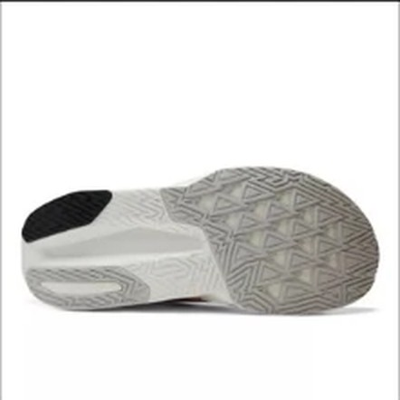
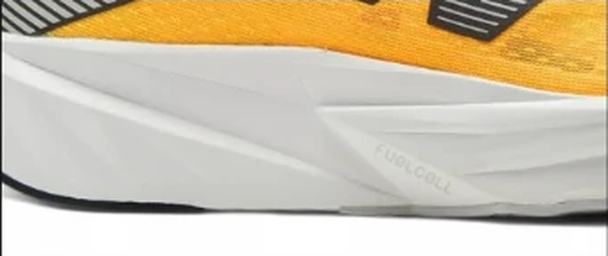

SPEED｜スピードトレーナー
1万円台で、スピード部門2位。
スピード部門17足中2位。1位のSuperComp Pacer v2との差は0.03点しかない。それでいて価格は¥16,940で、Pacer v2より¥8,910安い。コスパ点は5.0、1kmあたり約24円。スピード練習用を初めて買う人が、まず候補にしていい靴である。
ジョグからペース走まで1足で済ませたい人。初めてスピード練習用の靴を買う人。予算を2万円以下に抑えたい人。
強い反発で押し出してほしい人。レース本番用の1足を探している人。


衝撃吸収は145SAで、スコアのある107足の中で26番目に高い。それでいて実測220g。軽い靴はクッションを削りがちだが、REBEL v5は両方を持っている。
フォーム硬度は25.9ACと柔らかく、曲げ剛性も11.7Nと低い。足を入れて走り出すと、沈んでから戻る感覚の靴である。
摩擦係数は0.53。同じ価格帯のEVO SL（0.40）より高い。摩耗深度は0.8mmで、推定寿命は約700km。
5点満点。計測値を当サイトのルールで点数にしたもの。
クッション4.0、軽さ4.0、耐久性4.5と、弱い項目がない。スピード3.5は上位の中では控えめだが、どの項目も3.5を下回らない。突出より平均点で2位に入った靴である。
高いほど反発する。
短いほど安い。
| REBEL v5 | Pacer v2 | EVO SL | |
|---|---|---|---|
| 価格 | ¥16,940 | ¥25,850 | ¥19,800 |
| 実測重量 | 220g | 200g | 223g |
| 衝撃吸収（SA） | 145 | 132 | 147 |
| エネルギーリターン前足部 | 67.3% | 75.8% | 73.5% |
| 摩擦係数 | 0.53 | 0.44 | 0.40 |
| 摩耗深度 | 0.8mm | 0.8mm | 0.6mm |
| 性能点 | 3.89 | 3.92 | 3.77 |
| コスパ点 | 5 | 4 | 4.5 |
Pacer v2は20g軽く、反発も高い。ただし性能点の差は0.03点で、価格差は¥8,910ある。EVO SLは反発で上回るが、グリップは0.40と低い。総合で見るとREBEL v5が一番バランスがいい。
弱点は反発の数字である。前足部のエネルギーリターンは67.3%で、Pacer v2（75.8%）やEVO SL（73.5%）より低い。速いペースで押し出してもらう靴ではなく、自分の脚で回していく靴と考えたい。
フォームが柔らかいので、硬い靴に慣れている人は最初に沈む感覚が気になるかもしれない。試着ではその場で軽く走ってみるといい。
靴を何足も揃えられない人に向く。普段のジョグにも、週1回のペース走にも使える。2足目を買うときは、ジョグ用のクッション靴を足すと役割が分かれる。
軽い、柔らかい、安い。スピード部門の上位で一番手に取りやすい1足である。
※本記事は海外ラボ（RunRepeat）の計測データとメーカー公表値、当サイトの計算をもとにした分析です。計測はUS9（約27cm）です。1kmあたりの費用は摩耗深度から推定した寿命での概算です。価格は当サイトの掲載値で、変更されている場合があります。